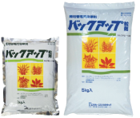
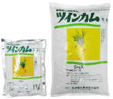
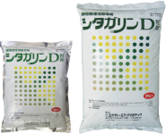
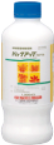
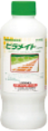
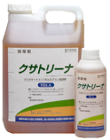
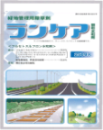
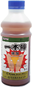
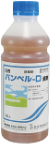

安全と環境に関する高い意識を持って鉄道軌道整備に貢献します
当社の基本方針
- 三現主義を実践し､現場最適の商品･技術及びサービスを提供します
- 安全と環境に関する高い意識を持って、鉄道軌道整備に貢献します
- 販売協力会社と連携し、顧客様の様々なニーズに応えます
- 社員一人ひとりが社会的な使命自覚し、目標を持ってチャレンジし、自己実現を果たすことが出来る企業風土を醸成します
会社概要
| 社名 | 株式会社エス・ディー・グリーンサービス |
|---|---|
| 設立 | 1980年5月1日 |
| 代表者名 | 遠藤 寛子 |
| 資本金 | 授権資本 24,000千円 発行株式 15,000千円 |
| 本社所在地 | 〒165-0021 東京都中野区丸山２丁目７－１３ 安部ビル１F TEL : 03-5356-2288 / FAX : 03-5356-2289 JR 058-4344 http://sdgreen.co.jp/ |
| 取扱品目 | 除草剤 バックアップ、ツインカム、シタガリンＤ粒剤、バックアップフロアブル、ピラメイトフロアブル ランケア顆粒水和剤、クサトリーナ液剤等 不凍性防食材シャダンＡ、ＡＬ－Ｎ 防食材シャダンＲ、断熱材ＳＣテープ、融雪剤等 |
| 主要取引先 | 北海道旅客鉄道株式会社 東日本旅客鉄道株式会社 東海旅客鉄道株式会社 西日本旅客鉄道株式会社 日本貨物鉄道株式会社 東鉄工業株式会社 株式会社交通建設 ユニオン建設株式会社 第一建設株式会社 仙建工業株式会社 東日本電気エンジニアリング株式会社 シーエヌ建設株式会社 名工建設株式会社 |
当社の取り組み
薬剤特性と現場状況を踏まえた散布プログラムの提案
除草剤は、有効成分・製剤等の違いにより、様々な特性を有します。 そこで当社は、農薬メーカーとの定期的な研修会等を通じて、取扱薬剤の特性の把握と、除草剤に関する最新情報の取得に努めております。
さらに、三現主義の徹底により、事前に現場の周辺環境を調査・把握し、現場に即した使用薬剤および散布プログラムを提案書にまとめ、その上で雑草防除施工を行っております。
農薬メーカー･販売協力会社との連携
農薬メーカー・販売協力会社との定期的な研修会等において、専門の知識・技術、現場ニーズ等に関する情報共有を行うと共に、連携を深めることで、全国の顧客様の様々なニーズに応えることができる体制を整えております。
製品紹介

バックアップ粒剤
カルブチレートを有効成分とする粒剤です。一年生雑草のほか、ススキ、セイタカアワダチソウなどの根の深い多年生雑草にも効果があります。
規格 1㎏：20袋 ５㎏＊４袋
残効期間も長く安定した除草効果が期待出来ます。
ツインカム
カルブチレートとMDBAの2種類を有効成分とする粒剤です。
規格 1㎏：20袋 ５㎏＊４袋
クズ、イタドリなどの広葉雑草にも高い効果が期待できます。
シタガリンＤ
カルブチレートとDBNの2種類を有効成分とする、粒剤です。
規格 1㎏：20袋 ５㎏＊４袋
一年生雑草及び多年生広葉雑草全般に対し効果が期待できます。また、スギナに対しても高い効果が期待できます。
バックアップフロアブル
カルブチレートを有効成分とするフロアブル剤です。
規格 １L*1５本：20袋 ５L＊４本
一年生雑草及び多年生雑草全般を枯らします。
ピラメイトフロアブル
カルブチレートとピラフルフェンエチルの2種類を有効成分とするフロアブル剤です。
規格 １L*1５本：20袋 ５L＊４本
一年生及び多年生雑草全般、更には、ギシギシ、スギナ、ヤブガラシ、セイタカアワダチソウ、ヨモギ等の根の深いの難防除雑草にも高い効果が期待できます。
クサトリーナ液剤
グリホサートイソプロピルアミン塩を有効成分とする液剤です。
規格 １L*1２本：20袋 10L＊２本
広範囲の雑草に効果を有し、雑草の茎葉部から浸透して雑草全体に移行します。散布後、地面に落ちた成分は速やかに分解されます。
ランケア顆粒水和剤
水田にも使用されるフルセトスルフロンを有効成分とする非農耕地用の顆粒水和剤（水に溶かして使用する粒剤）です。
規格 250g*4袋
一年生雑草と、一年生及び多年生の広葉雑草に効果を有し、難防除雑草であるクズにも効果を有します。
バンベルD液剤
ジメチルアミン塩を有効成分とする液剤です。
規格 １L*10本
広葉雑草とイネ科雑草との間に高い選択制を有しており、クズ、イタドリ、ギシギシなど広葉雑草に対して高い効果が期待できます。
一本締液剤
カルブチレートとDBNの2種類を有効成分とする、粒剤です。
規格 １L*10本
一年生雑草及び多年生広葉雑草全般に対し効果が期待できます。また、スギナに対しても高い効果が期待できます。
安全と環境のために...